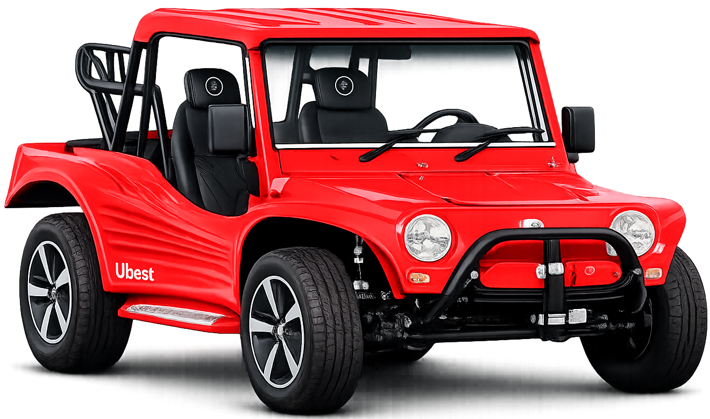
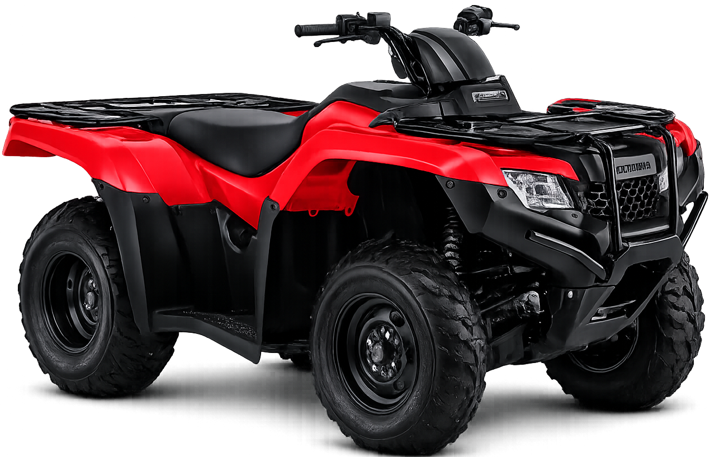
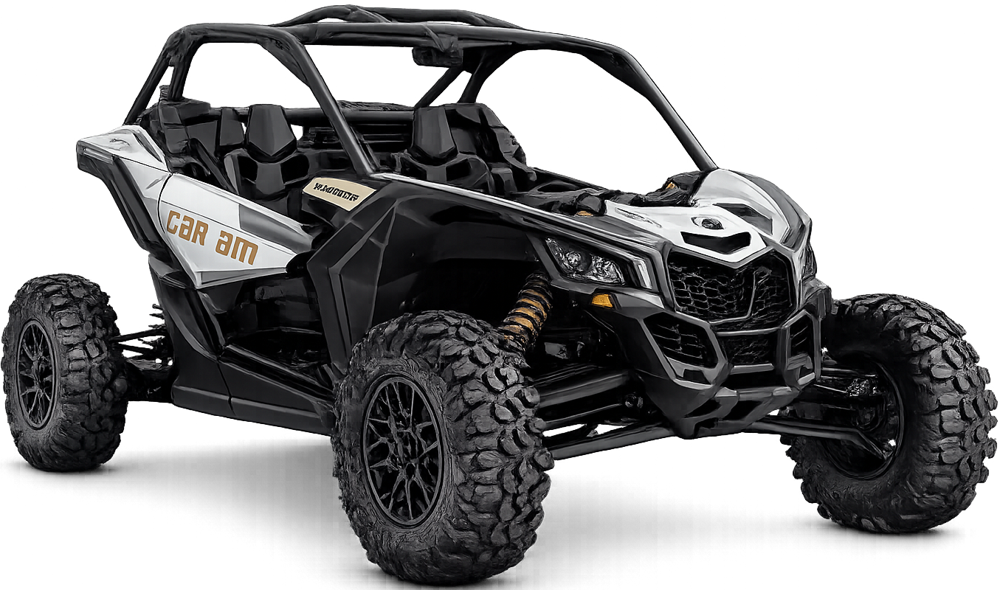
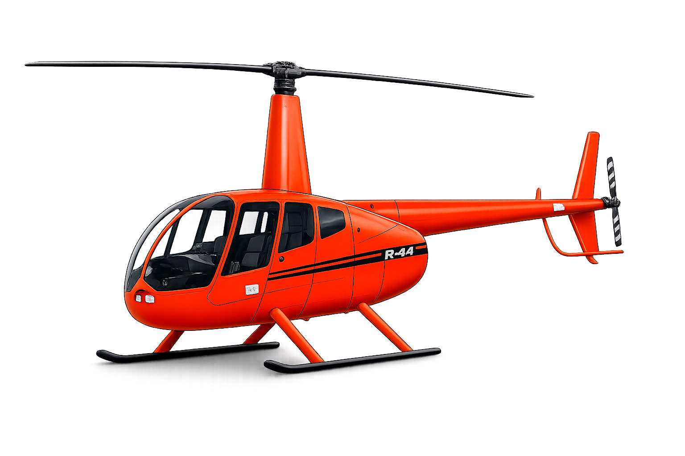

Discovery Jeri
Guia de marca da Discovery Jeri: cores, tipografia, uso da logomarca e aplicações — a referência única para qualquer material da empresa, incluindo o site.
A Discovery Jeri é a agência que leva viajantes para explorar Jericoacoara com segurança, atendimento próximo e um portfólio completo de veículos e experiências — do buggy clássico ao helicóptero. O símbolo da marca (o globo com a trajetória de um avião, dentro do monograma "DJ") resume isso em uma imagem: descoberta e movimento pelo mundo, com a exclusividade de operar só em Jeri.
Tom de voz
Direto, caloroso e confiante — como um amigo local que conhece cada canto de Jeri e quer que sua viagem seja tranquila.
O que evitar
Exageros genéricos ("o melhor do Brasil"), promessas vagas e depoimentos fabricados. Prova social é sempre real.
Assinatura
"Descubra Jericoacoara do seu jeito." — a ideia de escolha (veículo, roteiro, ritmo) guia toda a comunicação.
Extraída diretamente da logomarca: um gradiente de azul como cor de assinatura, com preto e branco para contraste e legibilidade. Nenhuma cor foi adicionada que não estivesse presente no material da marca.
A logomarca usa uma letra geométrica e arredondada, com sensação tecnológica — de "descoberta" e "movimento". Para o restante da marca (site, materiais, redes), escolhemos um par que conversa com esse espírito sem tentar imitar o logotipo: Sora para títulos e Manrope para texto corrido. Ambas são geométricas, modernas e têm ótima legibilidade em telas.
O monograma une as letras "D" e "J" em uma forma circular contínua, com o globo e a trajetória do avião no centro — o símbolo de descoberta que dá nome à marca. Cinco versões cobrem os principais usos.
Uso recomendado: foto de perfil do Instagram/Facebook, favicon e ícone de app — sempre a versão quadrada com fundo sólido, nunca a versão de logotipo completo (que fica ilegível em miniatura).
Mantenha ao redor da logo um espaço livre equivalente à altura do símbolo "DJ" (sem texto, imagem ou borda de outro elemento). Nunca distorcer, rotacionar, recolorir fora da paleta ou aplicar sombras/efeitos que não estejam neste guia.
Formas arredondadas (ecoando o monograma), gradiente azul como elemento de destaque, e ícones de linha fina — mesma lógica visual do globo com a trajetória de voo do símbolo.
Círculos com o gradiente de assinatura funcionam como glow de fundo em heros e seções escuras — nunca como preenchimento sólido de grandes áreas de texto.
Como a identidade se comporta nas principais seções de um site de passeios. A estrutura de roteiros e frota abaixo segue a mesma referência de layout já usada em trip-to-jeri/passeios.html — só repintada nas cores e tipografia da Discovery Jeri, para manter aquele clima de agência de turismo em vez de site institucional.
Descubra Jeri no seu jeito de viajar.
Buggy, quadriciclo, UTV, jardineira ou helicóptero — você escolhe o veículo, a gente cuida do roteiro.
Escolha o seu roteiro
Clique em um roteiro para ver o itinerário completo, veículos e informações — mesmo padrão de linha usado na página de passeios do Trip to Jeri.
Escolha o veículo do seu grupo




Regras rápidas para manter a consistência da marca em qualquer material — site, redes sociais ou impressos.
✓ Faça
- Use a versão azul da logo sobre fundos claros e a branca sobre fundos escuros ou fotográficos.
- Aplique o gradiente azul apenas em elementos de destaque (botões, glows, ícones grandes).
- Mantenha a área de respiro ao redor da logo.
- Use Sora para títulos e Manrope para texto corrido, sempre.
✕ Evite
- Recolorir a logo fora das versões azul, preta e branca aprovadas.
- Esticar, rotacionar ou aplicar sombra/efeito 3D na logo.
- Colocar a versão azul sobre fundos coloridos ou fotos com pouco contraste.
- Misturar outras fontes (serifadas, script) nos títulos da marca.
Discovery Jeri
Agência de passeios e experiências em Jericoacoara.